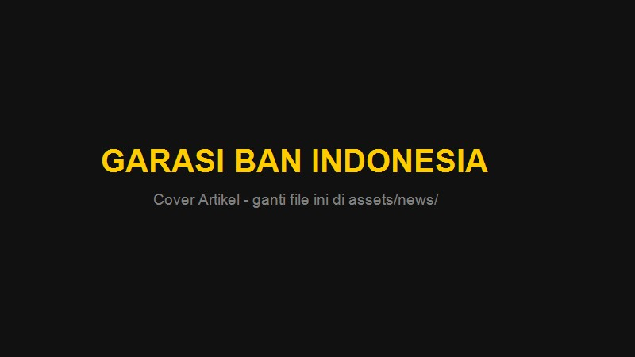

Tips & Artikel
25 Jul 2026
•
143 x dibaca
5 Cara Merawat Ban Motor Agar Awet dan Tidak Mudah Licin

"Tips praktis merawat ban motor harian agar tekanan angin tetap stabil, alur tidak cepat gundul, dan aman di jalan basah."
Ban merupakan satu-satunya komponen kendaraan yang bersentuhan langsung dengan permukaan jalan. Oleh karena itu, perawatannya sangat krusial demi keselamatan berkendara.
Berikut adalah 5 langkah mudah merawat ban motor Anda:
1. Cek Tekanan Angin Secara Rutin: Pastikan tekanan angin sesuai dengan rekomendasi pabrikan (umumnya 28-30 psi untuk ban depan dan 31-33 psi untuk ban belakang).
2. Bersihkan Kerikil di Alur Ban: Kerikil kecil yang terselip di tread ban bisa merusak struktur karet jika dibiarkan terus-menerus.
3. Hindari Membawa Beban Berlebih: Muatan berlebih membuat tekanan pada ban meningkat dan mempercepat kehausan alur.
4. Rutin Cek Keausan Ban (TWI): Perhatikan tanda Tread Wear Indicator (TWI) pada dinding ban. Jika karet sudah sejajar dengan garis TWI, segera lakukan penggantian.
5. Gunakan Standar Tengah Saat Parkir Lama: Hal ini mencegah ban mengalami deformasi atau gepeng akibat menahan beban di satu titik terlalu lama.
Berikut adalah 5 langkah mudah merawat ban motor Anda:
1. Cek Tekanan Angin Secara Rutin: Pastikan tekanan angin sesuai dengan rekomendasi pabrikan (umumnya 28-30 psi untuk ban depan dan 31-33 psi untuk ban belakang).
2. Bersihkan Kerikil di Alur Ban: Kerikil kecil yang terselip di tread ban bisa merusak struktur karet jika dibiarkan terus-menerus.
3. Hindari Membawa Beban Berlebih: Muatan berlebih membuat tekanan pada ban meningkat dan mempercepat kehausan alur.
4. Rutin Cek Keausan Ban (TWI): Perhatikan tanda Tread Wear Indicator (TWI) pada dinding ban. Jika karet sudah sejajar dengan garis TWI, segera lakukan penggantian.
5. Gunakan Standar Tengah Saat Parkir Lama: Hal ini mencegah ban mengalami deformasi atau gepeng akibat menahan beban di satu titik terlalu lama.